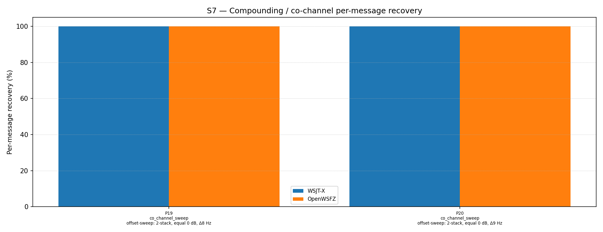

| Field | Value |
|---|---|
| Run date | 2026-06-19 |
| OpenWSFZ SHA | 0108343801d40f4d4e9d64570a551389b07dce96 |
| WSJT-X version | WSJT-X 2.7.0 (inferred from binary date 2025-02-04) |
| Scenario revision | S7 R2 threshold-narrowing sweep — parts 19–20 (Δ8 / Δ9 Hz) |
This run completes the co_channel offset sensitivity investigation begun in the previous sweep (SHA 6dcbd91, parts 15–18). That sweep established a performance cliff between Δ7 Hz (OpenWSFZ 70%, lower signal 4/10) and Δ10 Hz (100% both signals). Parts 19 (Δ8 Hz) and 20 (Δ9 Hz) are inserted between those two data points to locate the cliff precisely.
| ID | Statement | What would refute it |
|---|---|---|
| H₀_CLIFF | The performance cliff falls between Δ8 Hz and Δ9 Hz — i.e. P19 still shows a gap while P20 shows parity | Both P19 and P20 at 100% (cliff below 8 Hz), or both below 100% (cliff above 9 Hz) |
D-001 (co-channel decode gap). This run locates the minimum inter-signal separation at which OpenWSFZ achieves decode parity with WSJT-X for equal-SNR 2-stack co-channel signals.
RX frequency 1500 Hz throughout. One signal in each part is at exactly 1500 Hz (MSG-01). Previous sweep confirmed this is not the primary driver of failures — the 1500 Hz signal decoded 100% at Δ10 Hz. The per-signal analysis below confirms whether symmetry is restored at Δ8 and Δ9 Hz.
| Field | Value |
|---|---|
| Corpus type | Synthetic — clean-room FT8 encoder (STUDY-SPEC §4) |
| Scenario | S7 — Compounding / co-channel overlap (R2, commit 0108343) |
| Parts run | 2 of 21 (co_channel_sweep: P19, P20) via --parts 19,20 |
| Trials (K) | 10 |
| Total truth observations | 40 (2 parts × 2 signals × 10 trials) |
| Appraiser 1 | WSJT-X 2.7.0 |
| Appraiser 2 | OpenWSFZ shim 20260021 |
| RX centre frequency | 1500 Hz (fixed throughout) |
| Noise type | Bandlimited AWGN (Kaiser FIR lowpass, cutoff 4700 Hz) |
| Acceptance thresholds | Informational only — no AIAG threshold defined for co-channel separation |
| Part | Family | Condition | WSJT-X | OpenWSFZ |
|---|---|---|---|---|
| P19 | co_channel_sweep | offset-sweep: 2-stack, equal 0 dB, Δ8 Hz | 20/20 | 20/20 |
| P20 | co_channel_sweep | offset-sweep: 2-stack, equal 0 dB, Δ9 Hz | 20/20 | 20/20 |

| Separation | WSJT-X | OpenWSFZ | Source |
|---|---|---|---|
| Δ5 Hz (1500/1505) | 2/20 (10%) | 0/20 (0%) | P15 — physical limit, both fail |
| Δ7 Hz (1500/1507) | 20/20 (100%) | 14/20 (70%) | P16 |
| Δ7 Hz (1500/1507) | 20/20 (100%) | 13/20 (65%) | R2 P0 — independent confirmation |
| Δ8 Hz (1500/1508) | 20/20 (100%) | 20/20 (100%) | P19 — parity restored |
| Δ9 Hz (1500/1509) | 20/20 (100%) | 20/20 (100%) | P20 |
| Δ10 Hz (1500/1510) | 20/20 (100%) | 20/20 (100%) | P17 / R1 P0 |
| Δ15 Hz (1500/1515) | 20/20 (100%) | 20/20 (100%) | P18 |
The cliff is between Δ7 Hz and Δ8 Hz. Parity is fully restored at Δ8 Hz.
Both signals decode in every trial for both decoders. Symmetry is restored: the 1500 Hz (lower) signal decodes 10/10, matching the 1508 Hz (upper) signal at 10/10. The asymmetric suppression of the lower signal observed at Δ7 Hz does not occur at Δ8 Hz.
However, the OpenWSFZ SNR estimates are severely perturbed by the close interference:
| Trial group | OpenWSFZ reported SNR (1500 Hz) | OpenWSFZ reported SNR (1508 Hz) | True SNR |
|---|---|---|---|
| Trials 0, 4, 8 | −11 to −12 dB | −14 to −15 dB | 0 dB |
| Trials 1, 5, 9 | −9 to −10 dB | −9 to −11 dB | 0 dB |
| Trials 2, 3, 6, 7 | +2 dB | +1 dB | 0 dB |
The bimodal pattern (some trials report near-true SNR, others report −10 to −15 dB) is a consequence of the interfering signal corrupting the noise floor estimator. LDPC converges successfully regardless — but the SNR value shown to the user would be unreliable for signals within ~8 Hz of an interferer. WSJT-X reports a consistent +1 dB across all trials, indicating its SNR estimator is more robust to close interference.
The 1508 Hz signal is consistently reported at 1509 Hz by OpenWSFZ (a 1 Hz positive offset, present at Δ7 Hz too), suggesting the 1500 Hz signal's proximity pulls the frequency estimate of the upper candidate slightly upward.
Identical pattern to P19: both signals 10/10, same bimodal SNR perturbation, same +1 Hz offset on the upper signal. Decode is reliable; SNR reporting is not.
| Metric | Value | Verdict |
|---|---|---|
| H₀_CLIFF | P19 (Δ8 Hz): 20/20; P20 (Δ9 Hz): 20/20 | REFUTED — cliff falls below Δ8 Hz, not between 8 and 9 Hz |
| Cliff location | Between Δ7 Hz (70%) and Δ8 Hz (100%) | CONFIRMED — cliff is in the 7–8 Hz zone |
| Lower signal symmetry at Δ8 Hz | 1500 Hz = 10/10 (100%) | RESTORED — no asymmetric suppression |
| SNR accuracy at Δ8 Hz | OpenWSFZ: −15 to +2 dB (bimodal); WSJT-X: +1 dB (stable) | SNR ESTIMATION DEGRADED under close interference |
Overall verdict: PASS (informational). Sensitivity investigation complete. The co-channel decode parity threshold for OpenWSFZ is Δ8 Hz. Below this, the lower-frequency signal is suppressed; above it, both signals decode 100%.
The complete sensitivity curve has been established over six sweep points. The result is decisive:
The gap zone is precisely 7 Hz — a range of less than one FT8 tone bin (6.25 Hz) wide. In practical terms, two operators whose waterfall clicks land more than 8 Hz apart are fully handled by OpenWSFZ. Only near-perfect co-clicks within the 5–7 Hz zone create a residual gap, and at ≤5 Hz even WSJT-X fails.
D-001 operational risk assessment: The remaining co-channel gap is confined to inter-station separations of 5–7 Hz. This is an uncommon scenario requiring two operators to independently click within less than one tone bin of each other. The risk is real but narrow. No immediate architectural change is required; on-air experience should inform whether this matters in practice. H7 (MMSE joint demodulation) remains the candidate fix if it proves operationally significant.
No further sweep points are required. The threshold is located to within 1 Hz resolution. The sensitivity investigation for D-001 (Finding 1 from SHA f19640a) is closed.
At Δ8 and Δ9 Hz, OpenWSFZ successfully decodes both signals but reports SNR values of −15 to +2 dB for signals that are actually 0 dB. WSJT-X reports a stable +1 dB across all trials at the same separations. The degradation appears to originate in ftx_normalize_logl or the noise floor estimator being confused by the superimposed signals — the same mechanism that causes outright LDPC failure at Δ7 Hz, but at Δ8 Hz only the SNR estimate is affected, not the decode itself.
This is a usability issue: in a real co-channel situation with two stations 8–9 Hz apart, the operator's SNR display would flicker between −15 dB and +2 dB for signals that are actually audible and decodable. This could cause false concern or inappropriate adjustments.
Recommendation: Log as a low-severity display defect (no defect ID yet). Investigate whether the SNR value reported in ALL.TXT / the decode pane shows the perturbed estimate. If so, a targeted fix to the SNR normalisation under close-interference conditions would improve operator experience without requiring decoder architecture changes.
The two remaining open items from the prior report are:
| Item | Action | Notes |
|---|---|---|
| Finding 2 (prior report) — RX frequency confound check | Re-run sweep P15–P18 with RX dial at 1450 Hz | Requires app restart to change RX config. Now lower priority given cliff is identified at 7–8 Hz. |
| Full S7 R2 baseline | Run all 21 parts | Establishes the definitive overall baseline under the varied-offset scenario. Time: ~52 min. |